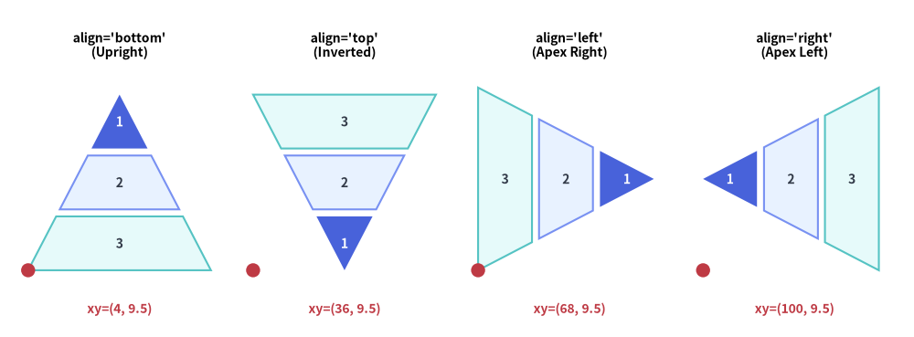
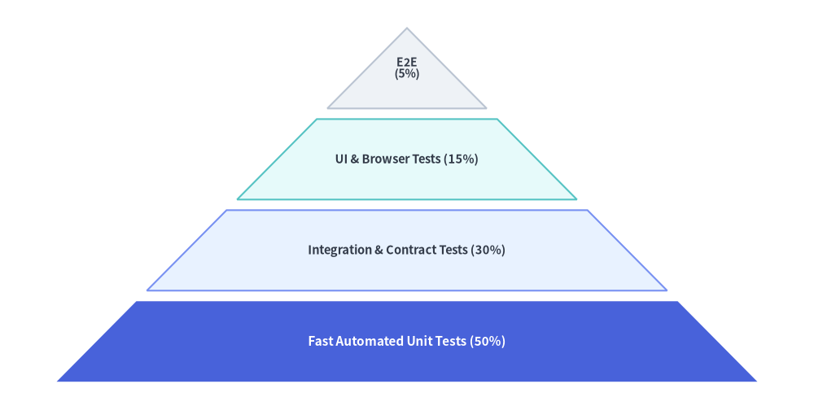
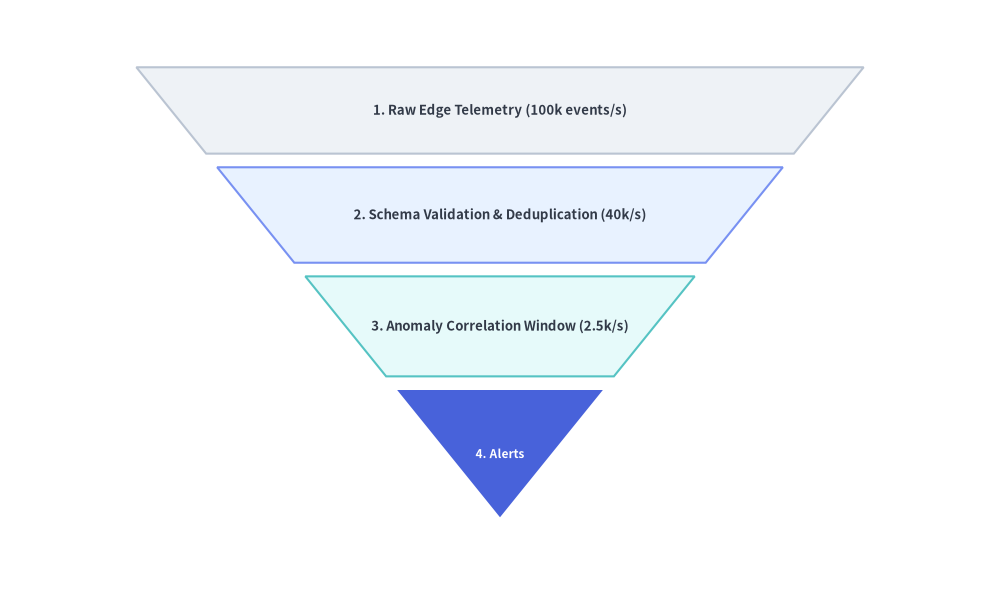

Pyramid
The Pyramid component renders tiered hierarchical trapezoids crowned by an apex triangle.
It supports standard upright pyramids, inverted funnels, horizontal orientations, and custom per-tier heights—making it ideal for software testing pyramids, DIKW knowledge hierarchies, defense-in-depth tiers, and conversion funnels.

Source Code
from drawlib.canvas import save, setup
from drawlib.shapes import circle
from drawlib.smartarts import Pyramid
from drawlib.styles import Styles
from drawlib.text import text
setup(width=130, height=48)
p = Pyramid(
style=Styles.Neutral,
text_style=Styles.DarkBold.patch(text_size=10.0),
)
p.add("1", style=Styles.PrimaryFlat, text_style=Styles.WhiteBold.patch(text_size=10.0))
p.add("2", style=Styles.PrimaryNeutral)
p.add("3", style=Styles.SecondaryNeutral)
panels = [
("bottom", (4.0, 9.5), "align='bottom'\n(Upright)"),
("top", (36.0, 9.5), "align='top'\n(Inverted)"),
("left", (68.0, 9.5), "align='left'\n(Apex Right)"),
("right", (100.0, 9.5), "align='right'\n(Apex Left)"),
]
for align_val, (px, py), label in panels:
text((px + 13.0, 41.5), label, style=Styles.BlackBold.patch(text_size=10.0))
p.draw(xy=(px, py), width=26.0, height=25.0, margin=1.0, align=align_val, order="vertex_to_base")
circle((px, py), radius=1.0, style=Styles.DangerFlat)
text((px + 13.0, 4.0), f"xy=({int(px)}, 9.5)", style=Styles.DangerBold.patch(text_size=10.0))
save()
1. Upward Hierarchy Pyramid (align="bottom")
By default (align="bottom", order="vertex_to_base"), the first added item is placed at the top apex triangle, and subsequent items form progressively wider trapezoidal tiers toward the base.
from drawlib.canvas import save, setup
from drawlib.smartarts import Pyramid
from drawlib.styles import Styles
setup(width=115, height=58)
pyramid = Pyramid(
style=Styles.Neutral,
text_style=Styles.DarkBold.patch(text_size=10.5),
)
# Added from apex (top) to base (bottom) when order="vertex_to_base"
pyramid.add(
"E2E\n(5%)",
style=Styles.Neutral,
text_style=Styles.DarkBold.patch(text_size=10.0),
)
pyramid.add(
"UI & Browser Tests (15%)",
style=Styles.SecondaryNeutral,
)
pyramid.add(
"Integration & Contract Tests (30%)",
style=Styles.PrimaryNeutral,
)
pyramid.add(
"Fast Automated Unit Tests (50%)",
style=Styles.PrimaryFlat,
text_style=Styles.WhiteBold.patch(text_size=11.0),
)
pyramid.draw(
xy=(8, 4),
width=99,
height=50,
margin=1.5,
align="bottom",
order="vertex_to_base",
)
save()

2. Inverted Conversion Funnel with Custom Tier Heights (draw_flexible)
Setting align="top" and order="base_to_vertex" inverts the pyramid into a top-down funnel where the first item is the wide top intake and the last item is the bottom apex. Using draw_flexible(...) lets you assign custom item_heights and margins to each stage.
from drawlib.canvas import save, setup
from drawlib.smartarts import Pyramid
from drawlib.styles import Styles
setup(width=115, height=58)
funnel = Pyramid(
style=Styles.Neutral,
text_style=Styles.DarkBold.patch(text_size=10.5),
)
# Added from wide top base to bottom apex when align="top", order="base_to_vertex"
funnel.add("1. Raw Edge Telemetry (100k events/s)", style=Styles.Neutral)
funnel.add("2. Schema Validation & Deduplication (40k/s)", style=Styles.PrimaryNeutral)
funnel.add("3. Anomaly Correlation Window (2.5k/s)", style=Styles.SecondaryNeutral)
funnel.add(
"4. Alerts",
style=Styles.PrimaryFlat,
text_style=Styles.WhiteBold.patch(text_size=10.0),
)
funnel.draw_flexible(
xy=(8, 4),
width=99,
item_heights=[10.0, 11.0, 11.5, 15.0],
margins=[1.5, 1.5, 1.5],
align="top",
order="base_to_vertex",
)
save()

3. Geometry, Orientations & Ordering
As illustrated in the opening diagram at the top of this page:
- Bottom-Left Anchor
(x, y): Thexycoordinate passed todraw()ordraw_flexible()specifies the bottom-left corner of the pyramid's bounding box. - Alignment (
align):"bottom"(default): Upright pyramid—wide base at the bottom, apex pointing up."top": Inverted funnel—wide base at the top, apex pointing down."left": Horizontal pyramid—wide base on the left, apex pointing right."right": Horizontal pyramid—wide base on the right, apex pointing left.
- Item Ordering (
order):"vertex_to_base"(default): First added item is placed at the triangular apex; last added item is at the wide base."base_to_vertex": First added item is placed at the wide base; last added item is at the triangular apex.
4. API Reference
Constructor
Pyramid(
*,
style: Style,
text_style: Style,
)
Methods & Properties
add(text: str, *, style: Style | None = None, text_style: Style | None = None, show: bool = True) -> PyramidItem: Appends a tier to the pyramid and returns a mutablePyramidItem(style,text,text_style,show). Settingshow=Falsehides that tier while preserving its slice geometry so sibling tiers never shift.pyramid.items -> list[PyramidItem]: Returns the list of all registeredPyramidIteminstances (style: Style,text: str,text_style: Style,show: bool), allowing deferred mutation before or betweendraw()calls.draw(xy: tuple[float, float], width: float, height: float, margin: float, align: Literal["bottom", "top", "left", "right"] = "bottom", order: Literal["vertex_to_base", "base_to_vertex"] = "vertex_to_base", scale: float = 1.0) -> None: Renders the pyramid with uniform tier heights separated bymargin, with optional proportional scaling aroundxy.draw_flexible(xy: tuple[float, float], width: float, item_heights: list[float], margins: list[float], align: Literal["bottom", "top", "left", "right"] = "bottom", order: Literal["vertex_to_base", "base_to_vertex"] = "vertex_to_base", scale: float = 1.0) -> None: Renders the pyramid with explicit per-tier heights (len(item_heights) == len(items)) and inter-tier margins (len(margins) == len(items) - 1). Notice thatitem_heightsare ordered from the base toward the vertex.